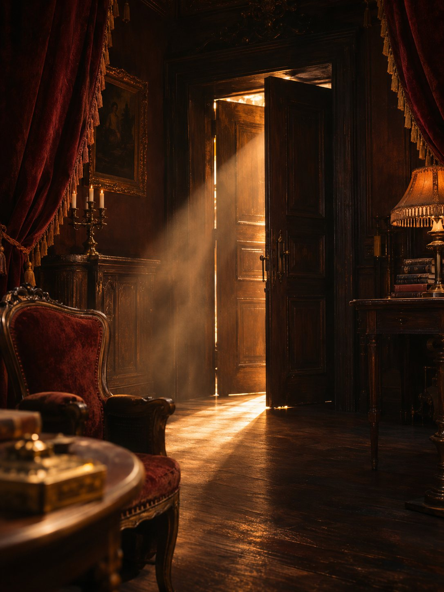
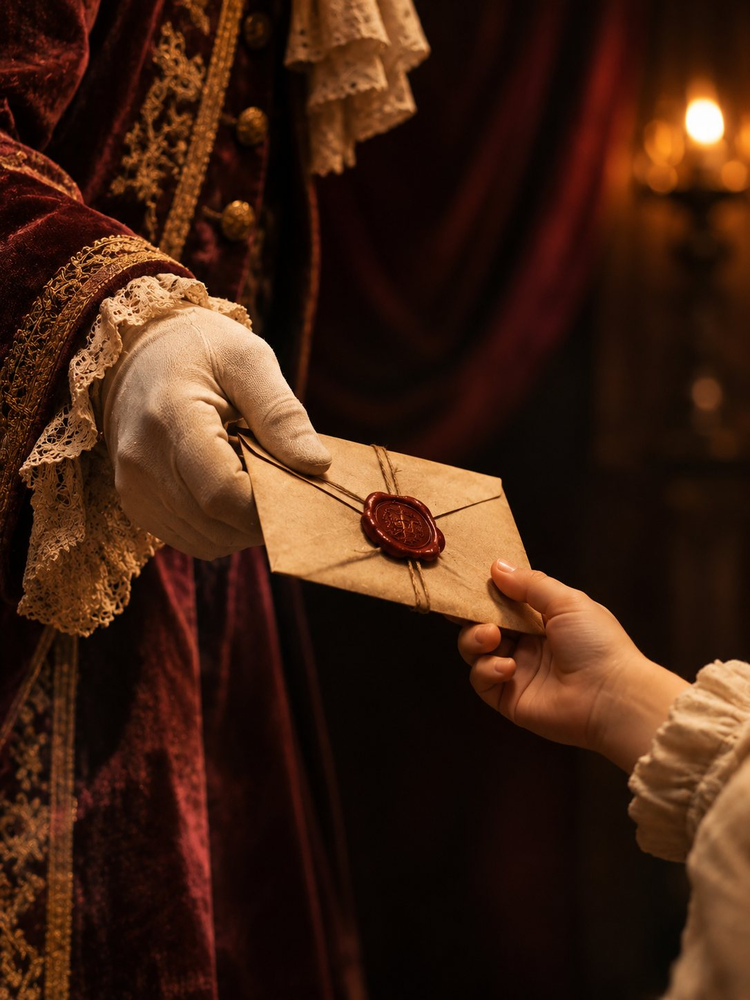
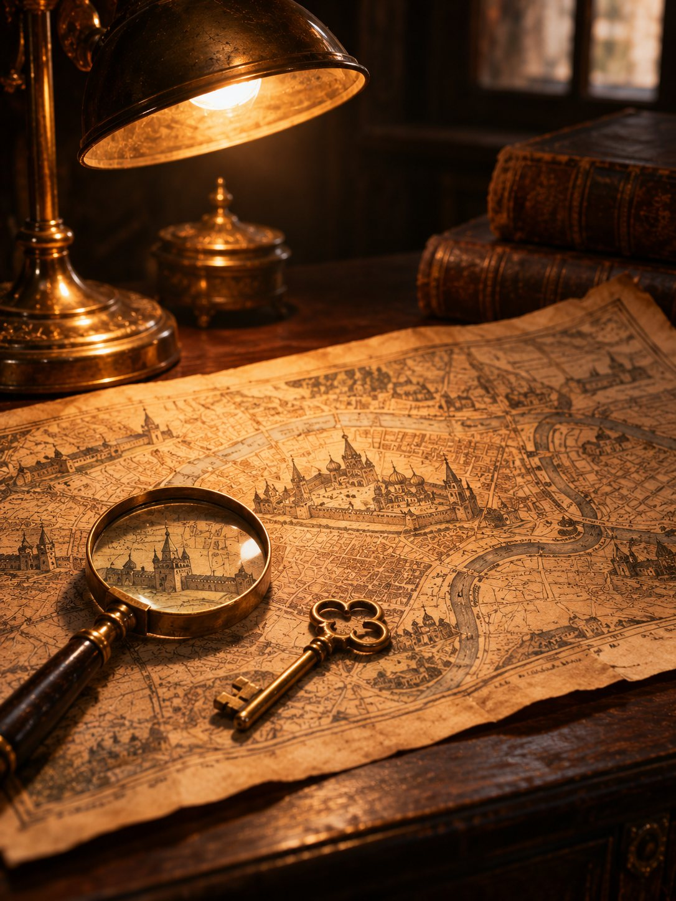
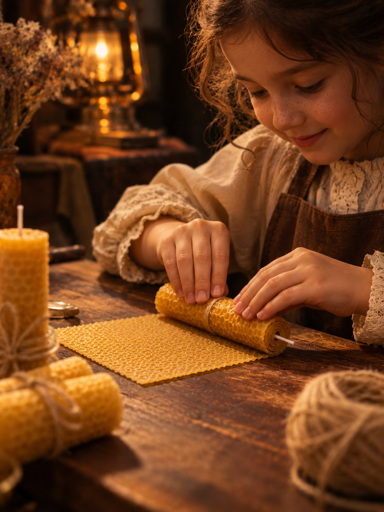
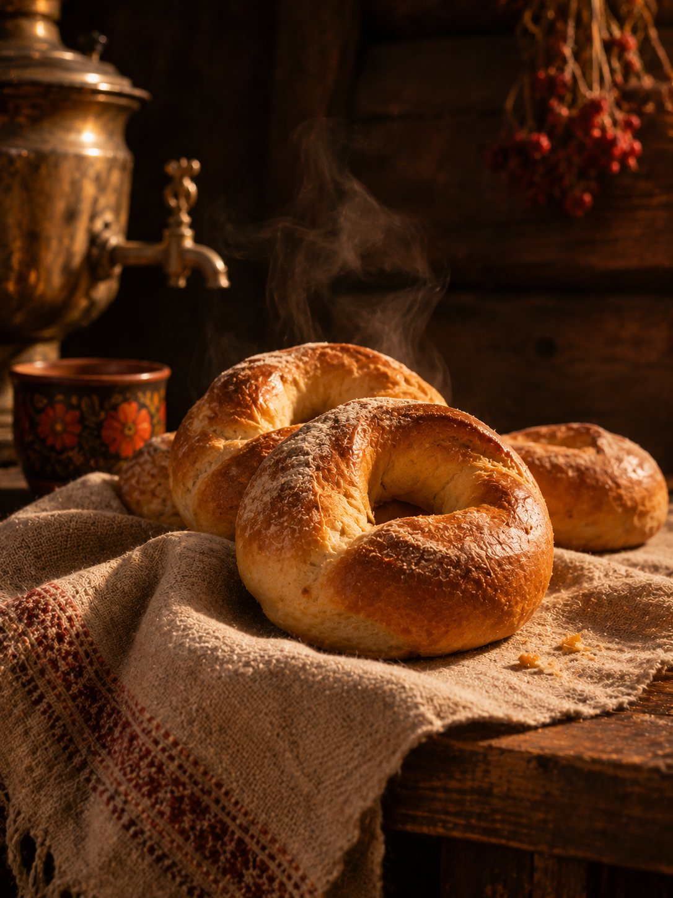
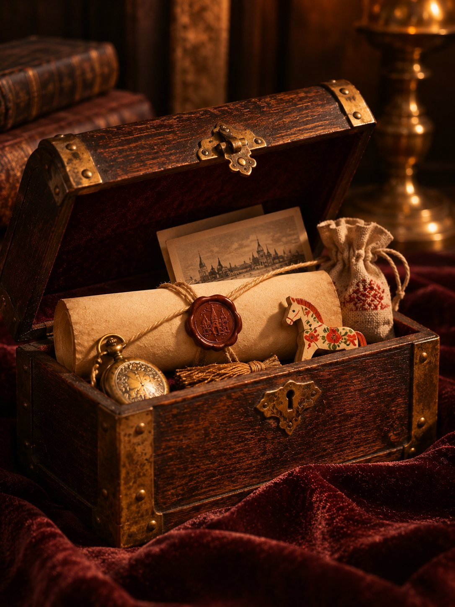
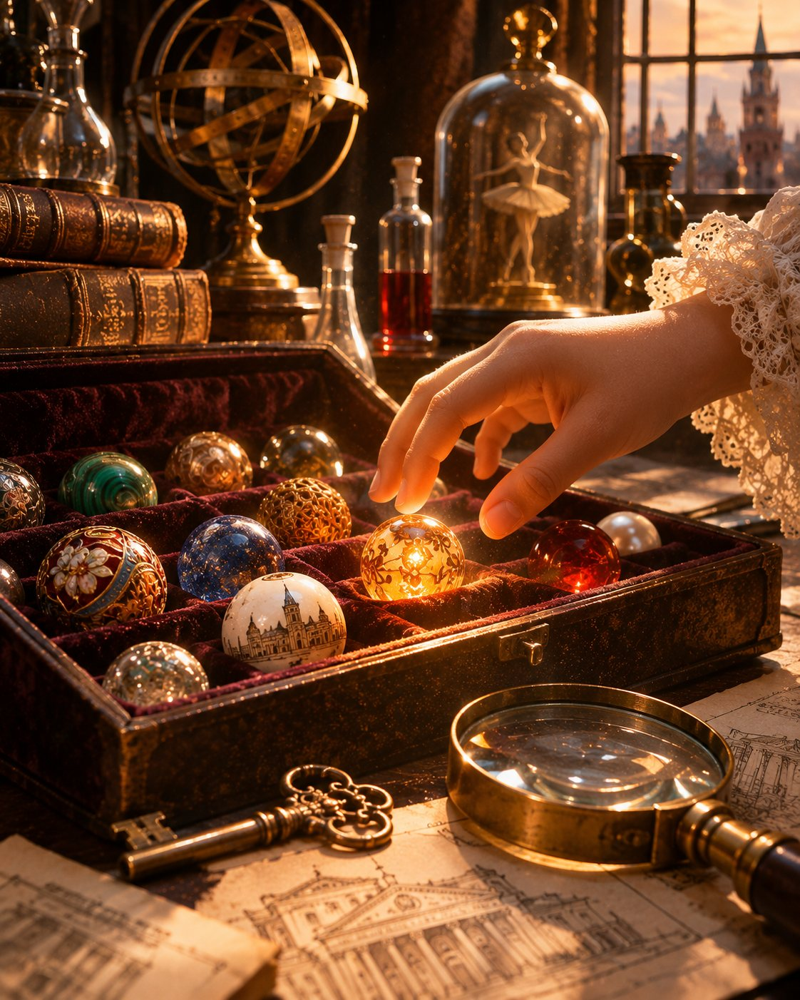
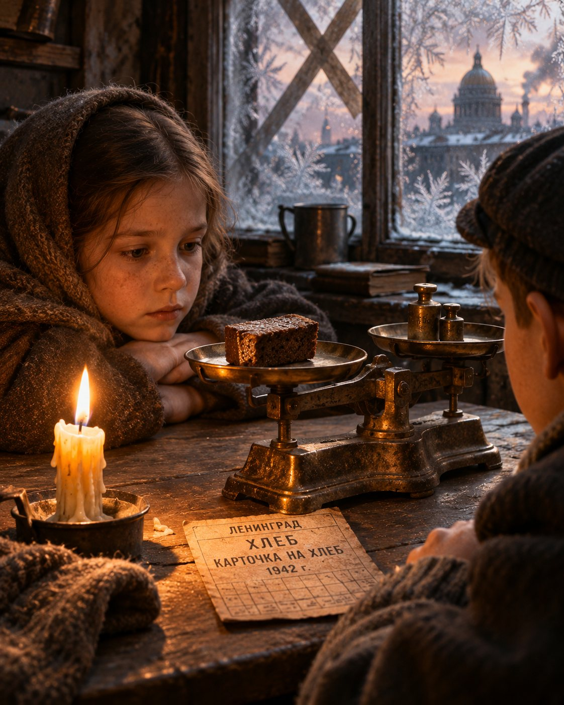
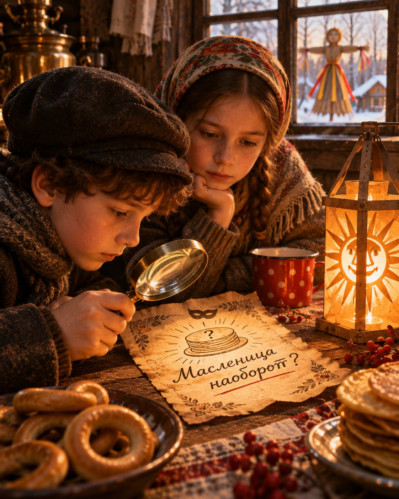

01
Погружение
Свет, звук, декорации и спецэффекты, как в кино.
Живые герои, тайны и мастер-классы. Полтора часа, в которые ваш класс становится главным героем истории.
Рекламы не даём. Классы приходят по рекомендации родителей
Дети не сидят в зрительном зале. Они встречают героев, разгадывают тайны и уносят домой вещь, сделанную своими руками.

Свет, звук, декорации и спецэффекты, как в кино.

Вместо экскурсовода живые герои. Каждый ребёнок участник, даже если детей сорок.

В основе каждой программы работа историка Москвы и детского экскурсовода.

Авторские поделки под сюжет. Ребёнок забирает их домой.

Историческое: блокадный хлеб, калачи по старинному рецепту.

Сундучки, сертификаты и памятные вещи на выходе.
Мы делаем это, чтобы дети росли счастливее, умнее, добрее и внимательнее к тем, кто рядом

Секретная лаборатория профессора, 13 волшебных бусин из разных эпох Москвы, калачи по старинному рецепту.

Квартира блокадного Ленинграда. Ребята готовят те самые 125 граммов хлеба и делают свечу памяти.

Портал в XIX век: расследование, обряд «Будим Солнце» и светильник, сделанный своими руками.
Работаем каждый день с 10 утра. Дату можно придержать, пока собираете группу.
Пришлём описание программы и условия одним сообщением, удобно переслать в чат класса.
Полтора часа игры. Четверо взрослых сопровождающих участвуют бесплатно.
Да. Программа идёт только для вашего класса или вашей группы знакомых детей. Сборных групп нет.
Можно. Группы обычно от 15 до 40 человек. Если детей меньше, оплата считается как за 15.
Стоимость программы общая и делится на всех детей: чем больше класс, тем дешевле на одного. Точную сумму пришлём под вашу дату и программу.
Цену даём на интервал, например на 29-35 человек. Если пара детей не придёт, для остальных цена не вырастет.
Многие классы приезжают в выходной от родителей, без оформления через школу. Работаем каждый день.
От 1 часа 20 минут до 2 часов. Зависит от программы и размера группы.
Четверо взрослых сопровождающих участвуют бесплатно при любом числе детей.
ТЦ «Филион», Багратионовский проезд, 5, рядом метро Фили. Можно своим ходом или автобусом, с автобусом поможем.
Подберём программу под возраст детей, обсудим дату, мастер-классы и транспорт.